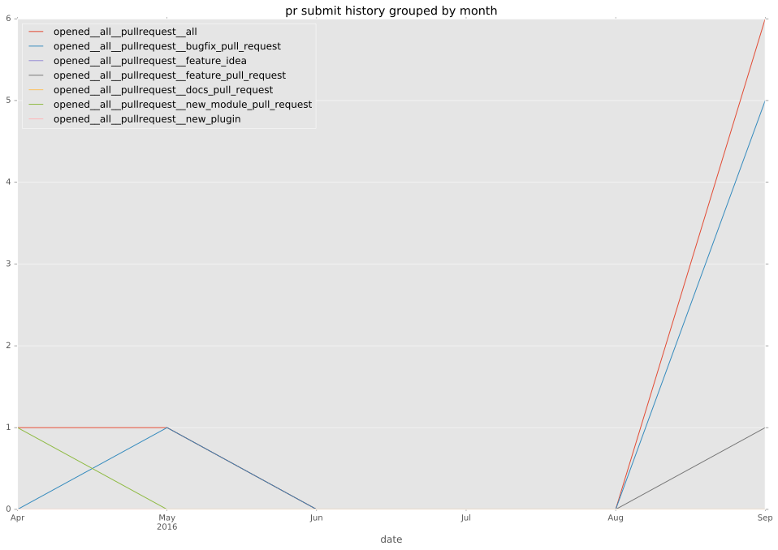
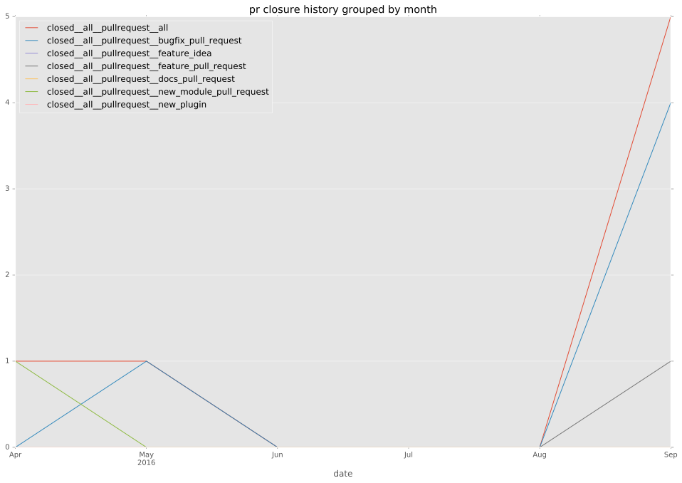
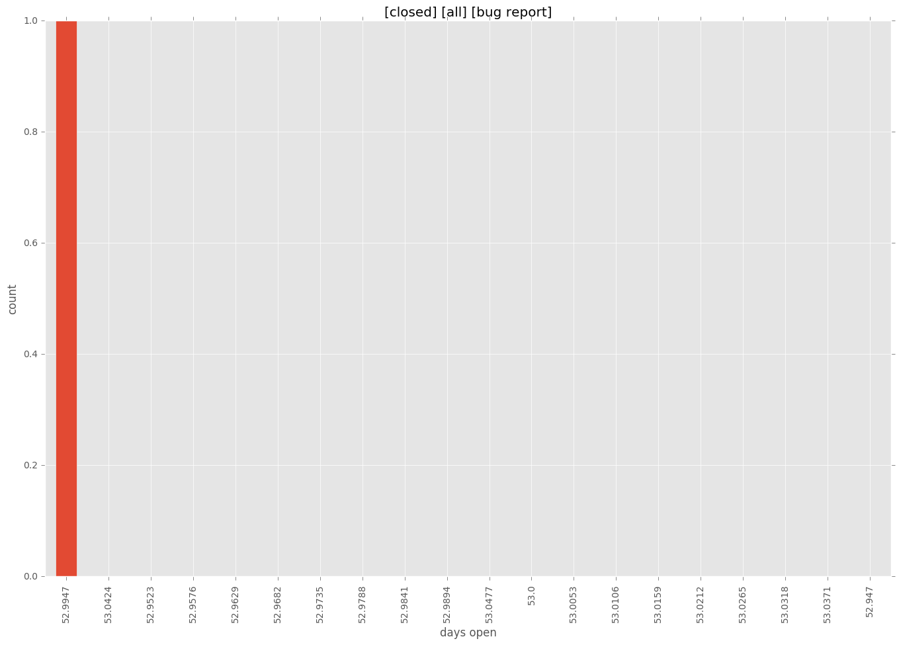

authors
- jedelman8
- GGabriele
maintainers
- jedelman8
- GGabriele
- privateip
- gundalow
contributors
- GGabriele : 82 commits
total issue counts
feature pull request: 2
pullrequest: 9
bugfix pull request: 6
issue: 2
new plugin: 1
bug report: 2
issue history
pullrequest history


days open by issue type
bugfix pull request
count: 10
std: 3.85284887381
min: 0
max: 9
median: 1.0
mean: 3.2
all
count: 17
std: 12.4838130487
min: 0
max: 53
median: 5.0
mean: 6.29411764706
pullrequest
count: 0
std: nan
min: nan
max: nan
median: nan
mean: nan
feature pull request
count: 4
std: 3.46410161514
min: 0
max: 6
median: 3.0
mean: 3.0
issue
count: 0
std: nan
min: nan
max: nan
median: nan
mean: nan
new plugin
count: 2
std: 0.0
min: 5
max: 5
median: 5.0
mean: 5.0
bug report
count: 1
std: nan
min: 53
max: 53
median: 53.0
mean: 53.0
closures grouped by total days open
